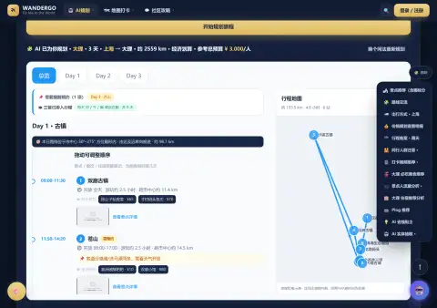
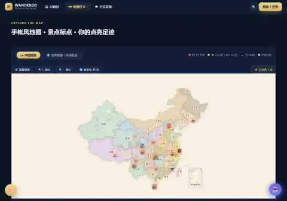
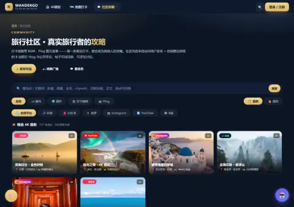

AI 帮你规划 → 地图带你走 → 真实打卡 → 自动生成纪念册，再成为别人的真实攻略。
AI 模块化攻略 · MAP 手帐风地图 · CF 协同过滤推荐 · DATA 数据可视化
输入出发日期、返程日期与目的地城市，一键生成景点、交通比价、预算拆解与雨天备案的模块化行程。

手帐风地图点亮足迹：中国 / 世界切换、点击飞行、真实打卡攒徽章，行程自动沉淀成旅程故事。

B站与站内创作者的攻略视频聚合，搜索筛选、词条挂载；AI 分析视频一键生成同款行程。
